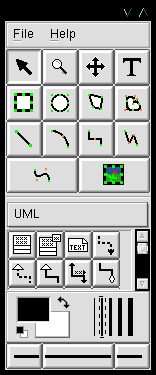
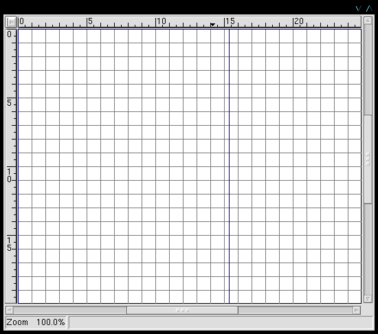
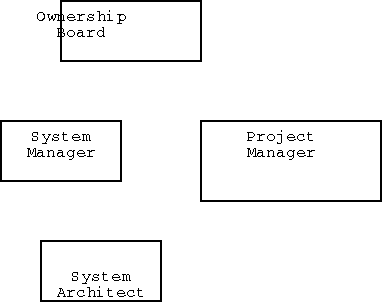
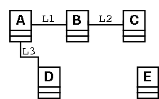

Dia Tutorial
Table of Contents
1 Abstract
This tutorial introduces Dia, the GTK-based GNU diagramming tool. We will install and configure the tool, then learn to use the basic shapes, then explore advanced features.
2 Introduction
From Dia home:Welcome to Dia's homepage. Dia is a gtk+ based diagram creation program released under the GPL license.
Dia is designed to be much like the commercial Windows program 'Visio'. It can be used to draw many different kinds of diagrams. It currently has special objects to help draw entity relationship diagrams, UML diagrams, flowcharts, network diagrams, and simple circuits. It is also possible to add support for new shapes by writing simple XML files, using a subset of SVG to draw the shape.
It can load and save diagrams to a custom XML format (gzipped by default, to save space), can export diagrams to EPS or SVG formats and can print diagrams (including ones that span multiple pages).
3 Installation
From the v0.86 INSTALL file:
REQUIREMENTS: ============= Dia needs Gtk+ at least version 1.2.0 installed. It can be found at: ftp://ftp.gtk.org/pub/gtk/v1.2/ Binaries availible at: ftp://ftp.gtk.org/pub/gtk/binary/devel/RPMS/ or ftp://ftp.gtk.org/pub/gtk/binary/devel/DEBIAN/ As of version 0.30 Dia also needs libxml (aka gnome-xml). I recommend you get a fairly recent version, but not version 1.8.0. It can be found here: ftp://ftp.gnome.org/pub/GNOME/stable/sources/gnome-xml/ As of version 0.40 Dia needs gdk_imlib, at least version 1.8.2. It can be found here: ftp://ftp.gnome.org/pub/GNOME/stable/sources/imlib/ BUILDING: ========= To build, run: ./configure make
To build dia, you need to install (in order):
- From GTK:
- glib
- gtk+
- From: Gnome (optional):
- base libraries (installed in order per gnome instructions)
- From Dia:
- dia. If you installed gnome, configure with "--enable-gnome"
Each of these is an autoconf-style install from sources. Binaries are available for some platforms. If you have a recent Linux installation, you may have all the pieces already.
4 Basics
4.1 Startup
Once installed, the app is started with:dia
This gives:

The first time up, you click File...Preferences and fill in personal choices. These are saved in your home dir as .dia/diarc. For example, I generally use the defaults except I make sure it is set to:
- User Interface...
- Compress...no (so I can easily manipulate the UML models later. If I were worried about space, I'd use "yes")
- Grid lines...
- Visible...yes
- Snap to...yes
After clicking OK on the preferences, you can make a diagram.
4.2 New diagram
Clicking File...New gives:

Right-clicking in that window gives a diagram-specific menu. From that select File...page setup:

Typically:
- Paper size: Use Letter for US printers.
- Orientation: Use portrait for most web pages, and landscape for viewfoils
- Margins: Leave as is. They resize for the paper size.
- Scaling: Leave as Scale...100. However, we'll come back to this later.
After clicking OK, the page setup goes away and you are ready to populate the diagram.
4.3 Draw an Organization Chart
An organization chart requires several boxes with text, some piped solid lines, and a few dashed lines. This can be done with the basic tools. So how do we use the basic tools?
Notice the mainwindow's layout:

If you hold the mouse over an icon, a tooltip will appear. If you click an icon, the tool is activated and any clicks in the diagram will provide a copy of that tool. After clicking and placing one or more copies of a shape, click the pointer tool (top left arrow icon) before attempting to move things around. (Otherwise you will get lots of unexpected shapes.)
The easiest way to work is to:
- Select a shape
- Click approximately the right number of them onto your diagram.
- Label them (most shapes accept text labels).
- Move the shapes into place.
- Connect them with lines. Make sure the lines actually link to the shape handles.
- Label the lines as needed.
- Drag shapes and lines around as needed. Add connection points as needed to make tidy lines.
- Add/modify more shapes and lines as needed.
For an org chart, we'll start with:

That looks terrible. The text doesn't line up with the boxes, and the font is tacky. How can we fix it?
4.4 Boxes and text
We could use a box which knows about text, and resizes around text. The boxes in the Flowchart library (e.g., the square) can do this. We could even make our own shape which knows about text.
But let's do it the hard way for now, with the basic box.
First, get the font right. Select a text item. Right-click to get the menu, then Dialogs...Properties. Select Helvetica. Leave the size as is -- we can scale later. Do this for each text item.
Next, carefully center the text in the box. Drag the box bigger if needed. Since the default is snap-to-grid, it will be difficult to align the text. So let's turn off snap-to-grid for a moment: With the pointer tool, click somewhere in the diagram (but not on a specific item), and type "g". Drag the text as needed, then type "g" again to toggle back to snap-to-grid.
Ok, the text is the right font and is aligned nicely. Let's lock those box-and-text combinations together. Use the pointer to drag a selection box (dashed lines) around a box-and-text combo. Type "Ctl-G" to make them a group. Do this for each of the boxes.
If you need to un-group a combo (e.g., to edit the text or realign), type "Ctl-U". For example, we notice misspellings, so we ungroup to fix those and then regroup.
We now have:

4.5 Lines
Now we can draw some lines. We'll use the piped lines (90 degree turns). We draw them approximately from one item to the next, and then use the pointer to drag the ends directly to the handles at each end. The line end turns red when it locks in to a handle.
We want to make the lines more interesting.
In general, lines are controlled from the main window in several ways:
- Line color, via the foreground/background icon.
- Line width, via the vertical lines of varying width
- Line style (e.g., dotted, dashed), via the middle of the bottom row.
- Line end arrows, via the left and right ends of the bottom row.
All of these apply to future lines. You can also modify an already-drawn line. Select it using the pointer. Right-click to get the diagram menu. Select Dialogs...properties. This brings up a dialog for changing any of the line's properties.
Thus, to fix our current lines: For each line, select the line, right-click to get the menu, select Dialogs...Properties, and change the line width from 0.1 to 0.2. Change the System Architect-to-Project Manager line to dotted line. But the wide dots look odd, so we change to dashed lines. The dashes are too long, so we make the dash interval 0.5. The net effect is:

Let's say the Systems Architect actually reports to the CIO (via a long chain of middle managers of course). We want to note that, but not over emphasize it. So we draw it in a thin line:

Ugh. We want that line to go around the outside. But there aren't enough middle bending points in the line to do it. So we select the line and the middle-click, to get the add-segment dialog. After adding a segment or two, we can drag the line to make a nice connection:

4.6 Saving
Ok, the diagram looks pretty good. Time to save it. First, we want to save the intellectual content, so we can later modify it. Second, we want to export it as a specific graphic format.
To save it, right-click for the menu, then File...Save. Insert the name, e.g., org.dia, and click OK. If you are saving a whole series of variants on the same file and need to save each to a separate file, use File...Save As. The file is saved in an XML format which is mostly Scalable Vector graphics (SVG). NOTE: Since we set Compress to No in the user preferences, we can examine the file in a text editor. Go take a look.
To export a usable image, select File...Export, and then enter the name with an appropriate extension, e.g., org.png. Look at the extensions list for candidates. If you don't have a preference, we suggest png (Portable Network Graphics).
A simple export may make a rather large image. If you look closely at the diagram window, you can see blue lines representing printable pages. Your diagram probably extends over several pages. So if you print out the diagram to a physical printer, you will need to tape the pieces together. This is not much of a concern for HTML, where the browser can pan back and forth over a large image. However, even for HTML a large image can be awkward.
So here is the recommendation:
- Build the diagram to any convenient size
- Save it as is
- Export it as is (full sized), for use in HTML links
- Export another copy for directly embedding in an HTML page.
Do this via File...Page setup...Scaling...Fit 1 by 1. This will show the scaling needed to fit the whole diagram on one page. But even that may be too large, so you can switch back to Scaling...Scale, and tweak the numbers until a convenient size is found for your HTML context.
5 Advanced
5.1 Layers
5.1.1 Simple case
Suppose we have four UML "class" objects, and want to draw a box around two of them. Doing so leaves the box on top and obstructs view of the two boxed classes. Putting the box in the background solves the problem.
Putting an object in the background is done by first selecting it, and then:
- Long way: Right-click for menu...Objects...Send to back
- Shortcut: Ctl-B

5.1.2 Full layering
Now suppose we have a common background (e.g., project logo) and want to build our diagram on top of that. It is no longer convenient to do this object by object. Instead we want to establish the layers in advance and use them over time.
If you are familiar with Gimp layers, you are in business -- it is the same mechanism. Otherwise, listen carefully.
When you start a new diagram, after doing page setup, select right-click...Objects...layers. This gives:

Click on the "new layer" icon (page with corner turned down), and you will get a "New layer". It is automatically placed above the Background layer. Click on the layer's name to select it. Once selected, you can move it relative to the other layers using the up and down arrows. Of course you should leave the Background layer at the bottom of the stack.
Clicking on the eyeball next to a layer toggles whether or not it is visible in the diagram. Generally, you build each layer separately, with just it visible, but turn on all layers occasionally to check alignment.
For our example, we put a text object which says "DRAFT" on the background layer. We make this text object grey using the color selector. Then we go to the new layer and make a diagram. Making both layers visible gives:

5.2 Alignment
Suppose we have several objects roughly aligned:

We could very carefully drag them around to get them aligned. But a better approach is to use the alignment functions. Select the almost-vertically-aligned circles. Right-click to get the menu, then...Objects...Horizontal...center. This moves the objects horizontally until their centers are aligned vertically.
Yes, it is a bit confusing: To align on a vertical axis, you have to select horizontal, because that is the axis on which the movement takes place.
Similarly, to align objects along a single horizontal axis, you select Objects...Vertical...center. After aligning groups vertically and horizontally, we get:

5.3 Selection
The obvious ways to select are:
- With pointer, click on an item
- With pointer, and shift-button down, click on 1 or more items
- With pointer, drag dashed-line box around the items to be selected
But you might want something fancier. In that case, Right-click to get the menu and then Select.... This gives the dialog:

For example, applied to this diagram, after selecting the "A" object:

- All: All boxes and lines are selected.
- None: No boxes or lines are selected (e.g., A is also unselected)
- Invert: Everything is selected except A
- Connected: A and L1 and L3 are selected, because L1 and L2 are directly connected to A.
- Transitive: A,B,C,D, and L1,L2,L3 are selected, because by following connections, you can reach each of these. E is left out because it cannot be reached.
- Same Type: A,B,C,D,E are selected, because they are the same type of Dia object (i.e., all UML class objects).
NOTE: If I ever figure out what the check boxes do, I'll let you know.
5.4 Shape Libraries
Dia comes with several shape libraries. It is also designed to allow you to add your own.
These libraries are of course domain-specific, so their use should be described in other contexts (e.g., UML should be discussed in a tutorial on software engineering). Here we will concentrate on the mechanics of using the shape libraries.
The libraries are saved in the share dir for wherever dia is installed. For example if which dia gives /usr/bin/dia, then we want to look at /usr/share.dia:
/usr/share/dia/
dia_logo.png Dia's logo
shapes/
Flowchart/ objects, in paired files (icon and shape)
magdisk.xpm icon
magdisk.shape shape description
...
sheets/ object descriptions in various languages (XML)
ER.sheet
Flowchart.sheet
UML.sheet
...
For example, if we are interested in the Flowchart library, and specifically in the magnetic disk object, we find the magdisk.shape file:
<?xml version="1.0"?>
<shape xmlns="http://www.daa.com.au/~james/dia-shape-ns"
xmlns:svg="http://www.w3.org/TR/2000/03/WD-SVG-20000303/DTD/svg-20000303-stylable.dtd">
<name>Flowchart - Magnetic Disk</name>
<description>Magnetic Disk</description>
<icon>magdisk.xpm</icon>
<connections>
<point x="0" y="2"/>
<point x="2.5" y="0.4375"/>
<point x="5" y="0"/>
<point x="7.5" y="0.4375"/>
<point x="10" y="0"/>
<point x="0" y="2.5"/>
<point x="0" y="7.5"/>
<point x="0" y="5"/>
<point x="0" y="10"/>
<point x="10" y="2.5"/>
<point x="10" y="5"/>
<point x="10" y="7.5"/>
<point x="10" y="10"/>
<point x="2.5" y="11.5625"/>
<point x="5" y="12"/>
<point x="7.5" y="11.5625"/>
</connections>
<textbox x1="0" y1="4" x2="10" y2="10"/>
<svg:svg width="10" height="12">
<svg:path d="M 0,2 c 2,-1.5 3,-2 5,-2 s 3,0.5 5,2 v 8
c -2,1.5 -3,2 -5,2 s -3,-0.5 -5,-2 v -8 z
M 0,2 c 2,1.5 3,2 5,2 s 3,-0.5 5,-2" style="fill: default"/>
</svg:svg>
</shape>
Notice:
- The name value maps to the description lines in the Flowchart.sheet file
<object name="Flowchart - Magnetic Disk"> <description xml:lang="no">Magnetdisk</description> <description xml:lang="fr">Disque Magnétique</description> <description xml:lang="de">Magnetdisk</description> <description>Magnetic Disk</description> </object>Thus, we get language-specific tooltips.
- The icon value is the file name of the icon shown on the main window.
- The shape is described by a Scalable Vector Graphics (svg) width/height and path.
- The location of connection points is given in the context of the width and height. You can add other connection points if you wish.
- The associated text field is also defined in the context of the width and height. Originally, it is under the magdisk object. You could move that to the middle of the magdisk object if you wished.
You can make your own sheets/shapes by following the above patterns.
Some shape libraries (e.g., UML) have associated processing and therefore are not just .shape files. To make your own library-with-processing requires going into the C code, and that is beyond the scope of this tutorial. (Perhaps embedded python will be supported in the future, simplifying even this adventure.)
Creator: Harry George
Updated/Created: 2000-10-06